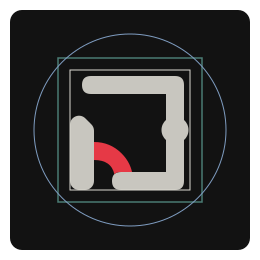
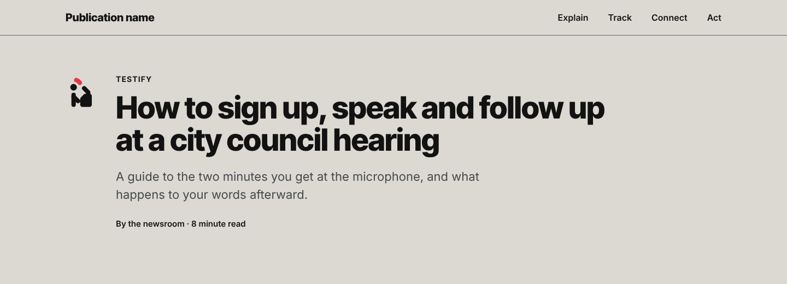
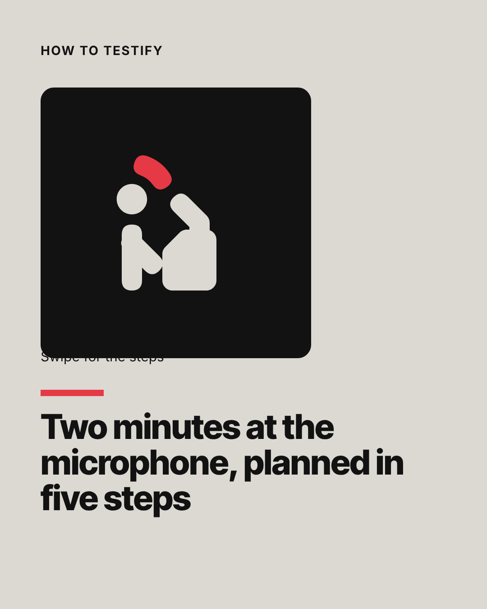
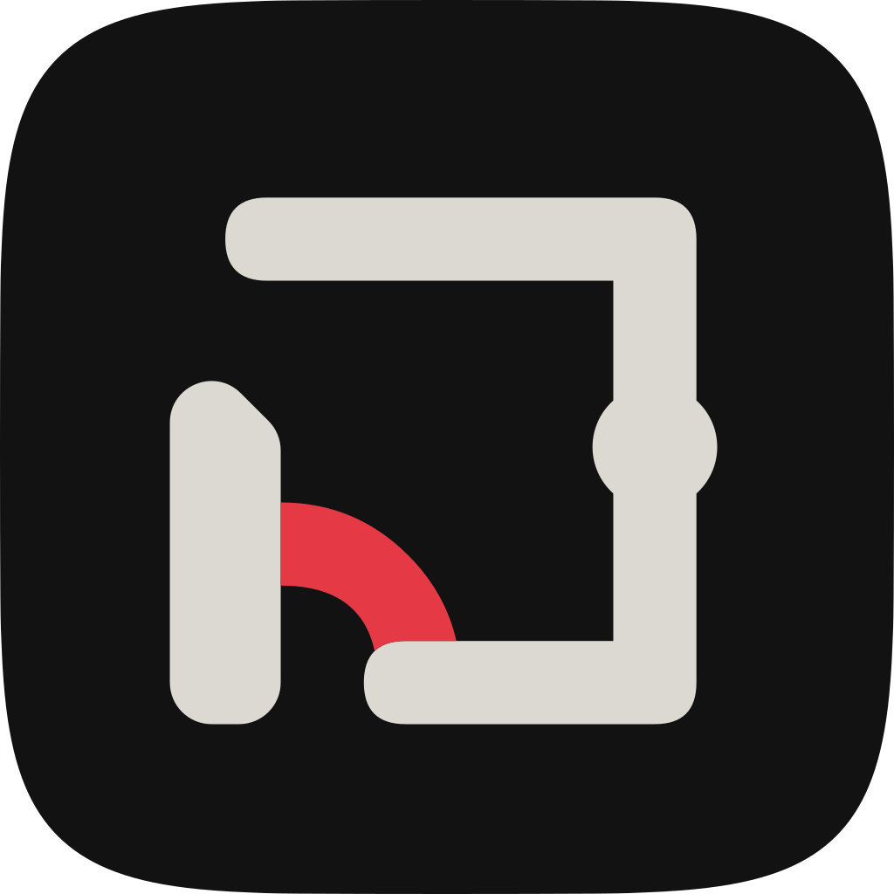
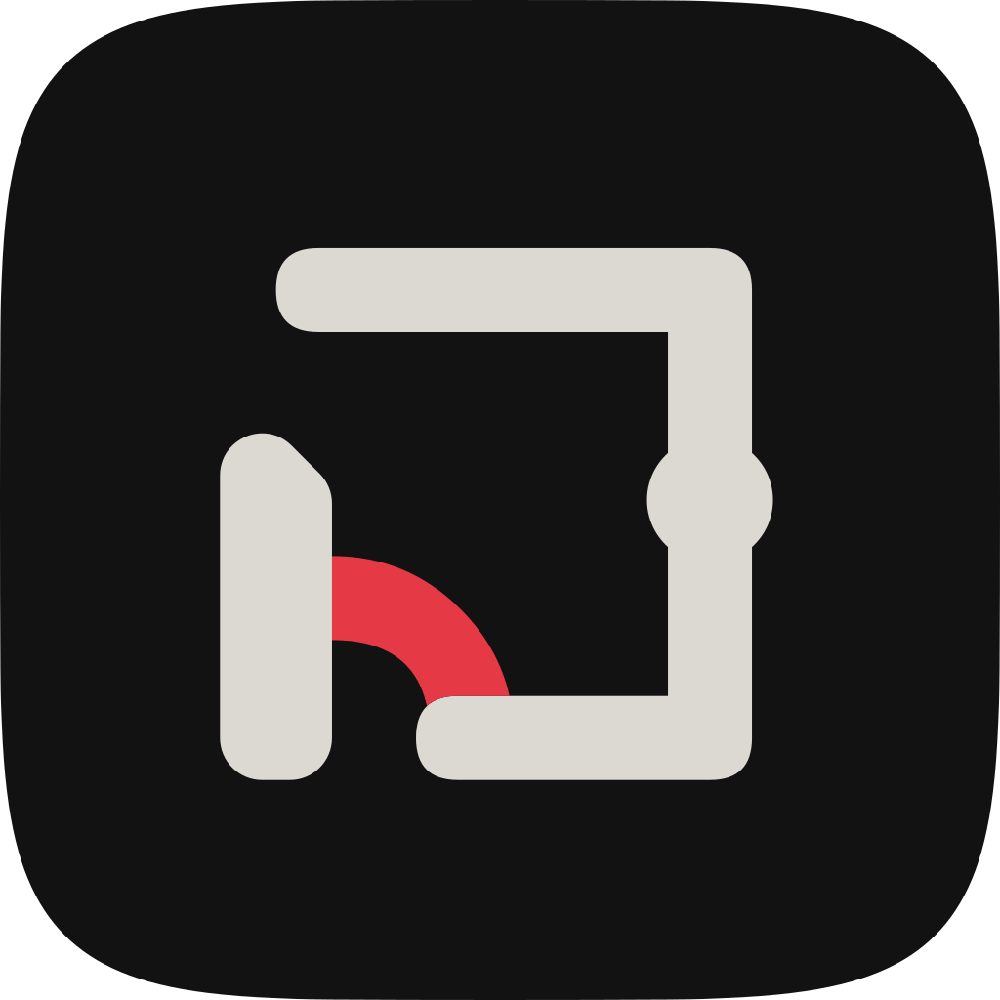
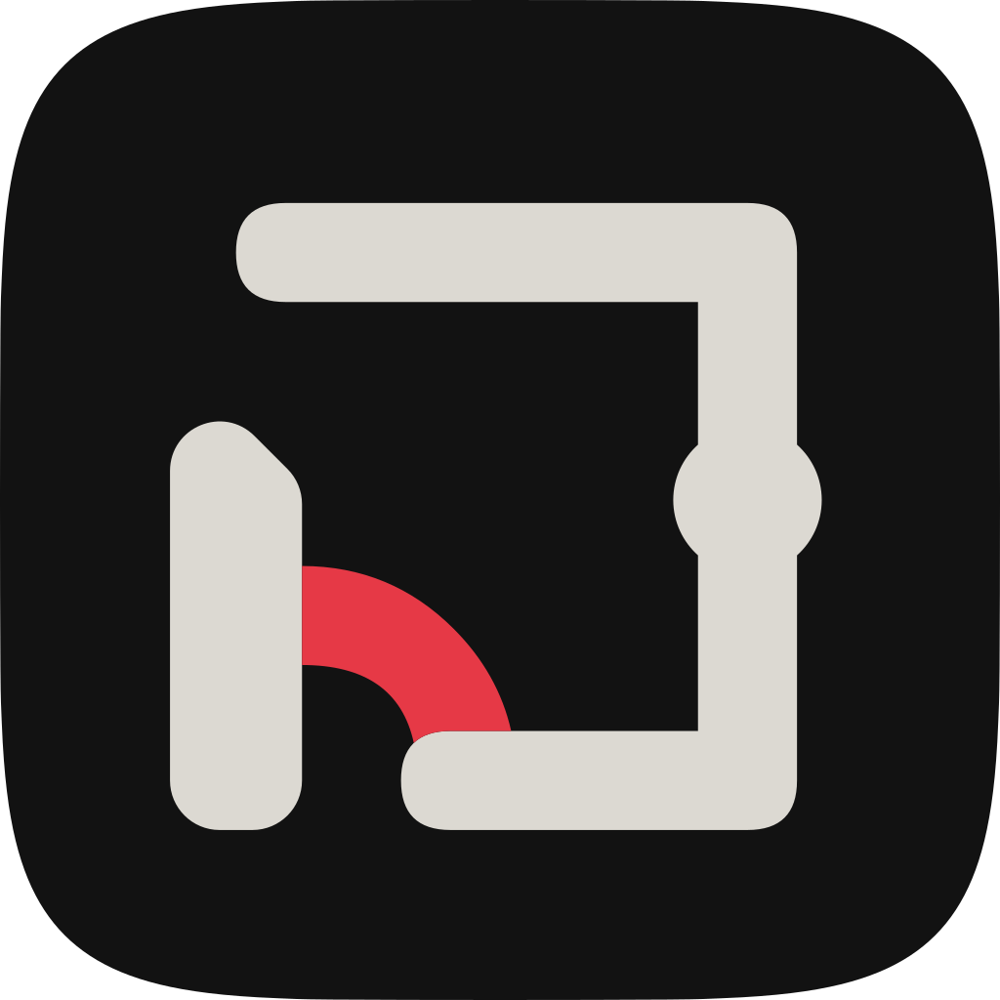

Phase 2 · Icon round two · Stage 2 · Concept 3 of 3
Public sign
Oath & Action's subjects drawn the way public information symbols are drawn: people and objects built from one bar on a 45 and 90 degree grid, plain enough to read across a room. The red marks the verb, the one stroke that shows what happens to the subject.
A proposal for the creative director and Dustin, October 28, 2026. No master in the guide changes. The blind name test on these finished masters is run by the main session and is not on this board yet.
1. The ten icons at 96 px
Display masters on Newsprint. Under each, the one line that names its red. Each red is a verb: a swing, an arrow, a bridge, a mark or a sound.
2. Beside the best: a benchmark sheet Study
Each icon at 24 px (its hinted master) and 48 px (its display master) beside the nearest Material Symbols glyph by subject, Outlined, weight 400, optical size matched. Material Symbols is Apache 2.0 and loads here through Google Fonts (D1-19). This is a study for judging finish; no Material drawing enters the family.
| Icon | Public sign 24 | Material 24 | Public sign 48 | Material 48 | Glyph |
|---|---|---|---|---|---|
| Explain | info | info | info | ||
| Track | stairs | stairs | stairs | ||
| Connect | link | link | link | ||
| Act | door_open | door_open | door_open | ||
| Ballot | how_to_vote | how_to_vote | how_to_vote | ||
| Bill | description | description | description | ||
| Testify | record_voice_over | record_voice_over | record_voice_over | ||
| Housing | house | house | house | ||
| Campaign money | payments | payments | payments | ||
| Feedback loop | autorenew | autorenew | autorenew |
Read at 24 px, the Public sign set is heavier than Material: a 3 px bar against Material's 2 px line. Its curves and joins are as clean at 48 px. At 24 px its weak points are Testify, where the arm, lectern and microphone fuse, and Ballot's check, which fills at 3 px. My judgement, not a reader's.
3. What changed after stage 1
Each pair shows the stage 1 display master beside stage 2 at 96 px, with the creative director's note and what the drawing now does.
Explain
Note 1 and ruling 1: bring the lid back in ink, a bar L turned up 45 degrees on its hinge, the red tracing its swing.
The top-right quarter is an ink L hinged at the end of the top bar and turned up 45 degrees. The red follows the lid's free end around the hinge. A lid turned 45 degrees travels 45 degrees, so the swing is an eighth of a circle; section 14 shows the quarter circle as a study.
Track
Note 2: give the red arrow a shaft.
A 45 degree bar along the line of the stair now ends in the solid head.
Connect
Note 3: two bar arcs held apart, the red bridge across the gap, the node on it.
Two arcs of the round-ended bar with their ends 4 units apart, each reaching in with a short spur. The bridge spans the gap between the spurs, and the node sits on it.
Act
Note 4: add a floor bar; draw the swing as a true quarter circle down to the floor.
Floor bar under the opening, and a true quarter circle from the leaf's free edge down to the floor. The full lintel stays and goes to Dustin (section 14).
Ballot
Note 5: taller box with a slot bar, paper sunk a third, a check with a long right arm, 7 units across.
A low wide box with walls rising to the slot, the paper's lower part inside it, and a check 7 units across on an 8-unit paper, red on Charcoal at 4.49:1.
Bill
Note 6: draw the corner as a fold, a diagonal with its small triangle, and two text bars of different lengths above the red line.
The page now fills the portrait keyline, so its silhouette stays apart from Explain's square (0.555 at 24 px). The first text bar stops short of the fold. The page weighs 37.9 percent of the field, over the band.
Testify
Note 7: stand the figure at a lectern, with a gooseneck microphone to the mouth and one red sound arc ahead of the face.
Standing figure, arm resting on a sloped lectern, gooseneck rising toward the mouth, one red arc ahead of and above the face. There is no room for the arc level with the mouth without touching the microphone.
Housing
Note 8: passes; keep it as drawn.
Kept, with one fix: the walls start 1.5 units lower. At stage 1 their round tops came within 0.2 units of the roof, against the family's 1.5-unit gap, and at 24 px they joined it.
Campaign money
Note 9 and ruling 2: a banknote about 18 by 11 with a solid disc, the red an arrow with a shaft leaving the upper right edge.
A landscape bar frame 20 by 11 units outside with a solid disc at its center, and a red arrow with a shaft leaving the upper right edge, outside the badge corner.
Feedback loop
Note 10 and ruling 2: two nodes on the center line, a straight forward link with its arrowhead, the return as an arc below with the red head.
Straight forward link with its head, return arc with the red head, so a half turn no longer maps the loop onto itself. The return runs over the top: drawn below, two nodes over a curve read as a face (study in section 14).
4. The rules, as drawn
| Grid | The shared 24-unit grid, 2-unit padding, live area 2 to 22; lines at 0, 45 and 90 degrees; curves taken from circles |
|---|---|
| Bar | 3 units with round ends and joins; 3 px at 24 px, 2 px at 16 px |
| Figure | Disc head 4.5 units held 1.5 units off a bar body; no hands, feet, faces or gender cues; never red |
| Node | A disc 4.5 units across on the horizontal center line in the four pillar marks |
| Gap | 1.5 units (1 px at 16, 1 or 2 px at 24) between parts and between ink and red |
| Red | One stroke or arrowhead at bar width, at most 14 percent of the painted area; every arrowhead has a shaft; red touches ink only where the verb acts on the object; no red alone in the top-right 6 by 6 units; no red plus shape |
| Weight | Ink and red 26 to 34 percent of the field at 96 px |
| Balance | Center of mass within 12 percent of the field from its center |
| Distinct | Every pair under 0.60 (D1-16: mean of filled-silhouette overlap and blurred correlation, the Phase 1 practice), at 16, 24 and 48 px, with red and without |
| Pixel fit | At least 0.60 of inked pixels crisp at 16 and 24 px (D1-17) |
| 16 px | A separate drawing on the 16-unit grid, 2 px bars on whole pixels; detail drops where the object alone names the subject |
| Banned | Domes, columns, flags, scales, seals and stars; a house in the utility set |
5. Sizes
16 and 24 px are the hinted masters. 32 px and up scale the display master; the display master is meant for 48 px and up, and 32 px is shown to find where the 24 px master should hand over.
6. Pixels
Chromium renders of the hinted masters at 1x, magnified six times without smoothing. Feedback loop, Campaign money and Bill have 24 px drawings made on the pixel grid: fitted from the display master, the loop's arrowheads became blocks, the coin a blob and Bill's text bars nubs. Every other 24 px master is the display drawing fitted to whole pixels.
7. Cover the red (test 2)
In each cell: as drawn, the red turned to ink, and the red removed (the idle state in a row). The last image column is White on Prussian with no red, at 24 and 48 px. The two number columns are measured at 24 px: how closely the idle icon matches its own full drawing, and its nearest other icon without red, which must stay under 0.60.
| Icon | 16 px | 24 px | 48 px | Prussian | Idle vs own | Nearest other, idle |
|---|---|---|---|---|---|---|
| Explain | 0.88 | 0.47 Ballot | ||||
| Track | 0.89 | 0.42 Campaign money | ||||
| Connect | 0.93 | 0.51 Campaign money | ||||
| Act | 0.92 | 0.46 Bill | ||||
| Ballot | 1.00 | 0.49 Campaign money | ||||
| Bill | 0.96 | 0.46 Act | ||||
| Testify | 0.92 | 0.47 Ballot | ||||
| Housing | 0.88 | 0.43 Bill | ||||
| Campaign money | 0.92 | 0.51 Connect | ||||
| Feedback loop | 0.94 | 0.47 Connect |
With the red gone, each drawing keeps its subject in ink: the frame and lid, the stair, the two halves, the doorway, the box and paper, the page, the speaker, the house, the note, the two nodes and their links. Testify without its sound arc reads as a person at a lectern, which is still the subject. Explain without its swing loses the motion and keeps the open lid. My reading; the rater has not seen these.
8. Surfaces
Newsprint. Ink 13.29:1, red 2.96:1
White. Ink 18.73:1, red 4.17:1
Charcoal. Ink 13.29:1, red 4.49:1
Prussian. Ink 13.28:1, no red on Prussian
Red on Newsprint measures 2.96:1, under the 3:1 a graphic needs, so no subject depends on its red: test 2 holds every name in ink. On Charcoal the red measures 4.49:1, and Ballot's check sits on its Charcoal paper at 4.49:1. In a row on Newsprint the current item's red takes a 1 px Charcoal keyline (4.49:1 against it).
9. Holders and tile colors
The square sign panel leads: a 2-unit corner radius on the icon's grid, 5 percent of the side, so the panel reads as a sign plate. The icon's 24-unit field takes 60 percent of the side and its live area half, as in round one. A Charcoal panel carries a Newsprint pictogram with red, a Newsprint panel a Charcoal one with red (G1-09), and Prussian carries White with no red. The superellipse is the app tile; the circle is the avatar.
Square sign panel (leads)
Charcoal, 96 px
Newsprint, 96 px
Prussian, 96 px
Charcoal at 40 px with the 24 px master; Newsprint at 28 px with the 16 px master
Rounded square (superellipse)
Charcoal, 96 px
Newsprint, 96 px
Prussian, 96 px
Charcoal at 40 px with the 24 px master; Newsprint at 28 px with the 16 px master
Circle
Charcoal, 96 px
Newsprint, 96 px
Prussian, 96 px
Charcoal at 40 px with the 24 px master; Newsprint at 28 px with the 16 px master

10. In use
Profile nameAvatar at 72 and 40 px


| Rental registry bill | In committee | Mar 4 | |
| Public records fee bill | Passed one chamber | Feb 27 | |
| Budget hearing sign-up | Open | Mar 11 |

56 percent

62 percent (chosen)
66 percent

11. Checks
Every number below comes from icons_r2_sign_measure.py, which renders each master in Chromium at device scale 1 and measures the pixels. Pixel fit is the crisp share at 16 and 24 px (D1-17). Red and weight are measured on the 96 px display render. Center of mass is the offset from the field's center as a share of the field. Similarity is the worst pair the icon takes part in, at 16, 24 or 48 px. Look-alike is the nearest reference glyph at 24 px that draws a different subject. Parts compares the separate pieces in the 16 px master with the display master's. Testify gains one at 16 px because the arm drops and the body stands apart from the lectern.
| Icon | Pixel fit 16 / 24 | Red share | Weight | Center of mass | Worst pair | Nearest look-alike | Parts at 16 | Live area | Badge corner, plus |
|---|---|---|---|---|---|---|---|---|---|
| Explain | 1.00 / 1.00 Pass | 11.0% Pass | 26.2% Pass | -0.035, -0.015 Pass | 0.566 Bill at 16 Pass | 0.72 Material pause Flag | 2 of 2 | Pass | Pass |
| Track | 1.00 / 1.00 Pass | 13.8% Pass | 27.7% Pass | +0.038, +0.035 Pass | 0.508 Connect at 24 Pass | 0.45 letter H | 2 of 2 | Pass | Pass |
| Connect | 1.00 / 1.00 Pass | 13.7% Pass | 27.9% Pass | -0.000, +0.020 Pass | 0.547 Campaign money at 24 Pass | 0.57 status light | 1 of 1 | Pass | Pass |
| Act | 1.00 / 1.00 Pass | 9.7% Pass | 33.3% Pass | +0.005, +0.046 Pass | 0.477 Bill at 24 Pass | 0.62 Material inbox Flag | 1 of 1 | Pass | Pass |
| Ballot | 1.00 / 1.00 Pass | 12.5% Pass | 33.0% Pass | -0.000, +0.087 Pass | 0.556 Campaign money at 24 Pass | 0.61 Material home Flag | 1 of 1 | Pass | Pass |
| Bill | 1.00 / 1.00 Pass | 6.8% Pass | 37.9% Fail | -0.012, +0.013 Pass | 0.575 Testify at 16 Pass | 0.83 Material sim_card Flag | 4 of 4 | Pass | Pass |
| Testify | 1.00 / 1.00 Pass | 11.0% Pass | 26.8% Pass | -0.053, +0.098 Pass | 0.575 Bill at 16 Pass | 0.52 Material door_open | 4 of 3 | Pass | Pass |
| Housing | 1.00 / 1.00 Pass | 11.8% Pass | 26.2% Pass | -0.008, +0.012 Pass | 0.525 Bill at 16 Pass | 0.55 Material notifications | 4 of 4 | Pass | Pass |
| Campaign money | 1.00 / 1.00 Pass | 12.0% Pass | 30.2% Pass | +0.011, +0.070 Pass | 0.556 Ballot at 24 Pass | 0.58 Material radio_button_checked | 2 of 2 | Pass | Pass |
| Feedback loop | 1.00 / 1.00 Pass | 11.5% Pass | 18.0% Fail | -0.007, -0.086 Pass | 0.537 Connect at 24 Pass | 0.50 status light | 4 of 4 | Pass | Pass |
Sets: worst pair at 16 px 0.575 (bill, testify, 16), at 24 px 0.556, at 48 px 0.517; without red, worst 0.511, 0.509 and 0.514. Weight runs 18.0% to 37.9% around a median of 27.8%. Holder safe area: 270 tiles rendered, 0 outside the live area or the circle's safe zone; round forms may cross the live area by 0.25 units, as ruling 4 allows.
Two weight misses
Bill weighs 37.9%. A page at the bar's 3 units with two text bars and a fold cannot get lighter without narrowing, and a narrower page scored 0.62 against Explain. I kept Bill distinct and heavy. Feedback loop weighs 18.0%: two nodes and two thin paths leave most of the field open, and larger nodes crowd the forward arrow at 24 px.
Look-alikes at 0.60 or more
The look-alike score compares filled silhouettes and blurred pixels, so it cannot see interiors. Bill scores 0.83 against the SIM card because a page and a SIM card share an outline; what separates them is the text bars inside, and the rater who saw SIM card at stage 1 saw rounded blocks there. Explain's score against the house glyph is the risk I take most seriously: the lid turned up 45 degrees makes a roof line over a square. The blind name test is the judge for all of these.
Same-subject glyphs score high and confirm the reading: Ballot against how_to_vote 0.68, Bill against description 0.83.
12. Tests 2 to 4
| Test | Result | How it was run |
|---|---|---|
| 1. Name it | Not run on these masters | The main session runs it with a fresh rater. The concept stops if more than two icons fail. |
| 2. Cover the red | Pass on measures; my reading passes all ten | Red turned to ink and removed at 16, 24 and 48 px and White on Prussian (section 7). Without red, the worst pair is 0.511 at 16 px, so no two icons merge. Whether each keeps its name is my reading until a rater sees them. |
| 3. Hold up at 2x | Pass on measures, with two weight misses | One bar weight: the median stroke is 3.00 units in eight of ten; Ballot and Testify measure wider because their paper and lectern are solids. Pixel fit 1.00 at 16 and 24 px. Centers of mass all inside 12 percent. Bill and Feedback loop sit outside the weight band (section 11). |
| 4. Beside the best | Partial, my judgement | At 48 px the set looks as finished as Material Symbols. At 24 px it is heavier and Testify fuses. In a one-color row of all ten it reads as one family (section 7, middle image in each cell). With the wordmark covered at 48 px it reads as public information signage first and as Oath & Action second: the red verbs carry the brand, and the bars belong to the genre. |
13. Rubric
Master Brief section 6 plus the seventh line, 1 to 5, ship threshold 4 on every line. My scores, for the creative director to overrule.
| Line | Score | Reason |
|---|---|---|
| Craft | 3 | Clean joins and one bar throughout, and hand-drawn 24 px masters where fitting failed. The bars are blunt at 96 px and Testify fuses at 24 px. |
| Clarity | 4 | The concept the stage 1 rater read most easily. Every pair separates at 16, 24 and 48 px with and without red. Unproven until the name test reruns. |
| Brand fidelity | 3 | The red verbs and the node carry Oath & Action. The bar drawing and the sign panel come from transit and government signage, and the pillar marks give up Direction A's solids. |
| Usefulness | 4 | Idle, current and Prussian states, three holders in three colors, 16 px drawings for legends and tables, an app tile and an avatar. |
| Evidence honesty | 4 | Every number on the board is measured by script; misses and deviations are shown beside the drawings. No person has read an icon. |
| Accessibility | 4 | Ink passes 13:1 on every surface; no subject depends on red, which measures 2.96:1 on Newsprint; the current item's red takes a Charcoal keyline. |
| Beauty and distinctiveness | 2 | Legible and orderly. Beside Dustin's references and Aicher's own sheets it looks like a competent public sign set, and the genre's familiarity is the reason. |
Public sign does not meet the ship threshold on craft, brand fidelity or beauty. Its case is legibility for newcomers.
14. Decisions
For Dustin's named approval
- The pillar marks change treatment. Direction A's skeletons stay; the solids become bars with round ends and a disc node. Options: approve the bar treatment for this concept, or keep the solids and drop the concept. Recommendation: decide only if Public sign wins, since it changes Y1's solid treatment.
Explain, approved (Direction A, Gate 1) Explain, Public sign Track, approved (Direction A, Gate 1) Track, Public sign Connect, approved (Direction A, Gate 1) Connect, Public sign Act, approved (Direction A, Gate 1) Act, Public sign - Act keeps its full lintel (round one's IC-04). Options: full lintel, or the frame over the opening only. Recommendation: the full lintel, because without it the doorway reads as the letter n at 24 px.
- Explain, if it fails the name test. Its skeleton then goes to Dustin as a question, with the drawings beside the approved one. Options: the hinged lid at 45 degrees (the master), the lid open 90 degrees with a true quarter-circle swing (a study, over the red ceiling), or the approved lifted quarter. Recommendation: the master; the 90 degree lid reads as a tab.
Approved skeleton Master: lid hinged and turned up 45 degrees Study: lid open 90 degrees, quarter-circle swing, red 18.8 percent - Topic symbols carry a node only where it is part of the subject. This narrows Y5. Recommendation: approve; Ballot, Bill, Testify, Housing and Campaign money carry no node.
For the creative director
- Feedback loop's return runs over the top. Note 10 asks for it below. Options: as drawn, or below. Recommendation: over the top, because two nodes over a curve read as a smiling face.
Master: return over the top Study: return below, as note 10 words it - Bill stays over the weight band at 37.9%. Options: keep the wide page, or narrow it into the band and fail similarity with Explain. Recommendation: keep; D1-16 protects the name.
- Feedback loop stays under the band at 18.0%. Recommendation: accept; the drawing is two nodes and two paths.
- Explain's swing is 45 degrees. Note 1 asks for a lid turned 45 degrees and a quarter-circle swing; one lid cannot do both. Recommendation: keep the 45 degree lid.
- App tile at 62 percent. Chosen by eye from 56, 62 and 66 (section 10).
15. Tested and not tested
Tested
- Pixel fit, density, red share, center of mass, stroke width, bounds, badge corner and red plus shapes for all ten at 16, 24 and 96 px, from Chromium renders at device scale 1.
- Similarity of all 45 pairs at 16, 24 and 48 px, with red and without.
- Look-alikes against 42 Material Symbols glyphs, 13 letters and numerals, and the Phase 0 watch items, at 16, 24 and 48 px.
- Contrast of ink, red and keyline on Newsprint, White, Charcoal and Prussian.
- The safe area of 270 holder tiles (three shapes, three colors, 28, 40 and 96 px).
- This board in Chromium at 1440 and 390 px: no sideways scroll, no text under 13 px, every image loaded (screens in the public-sign folder).
Not tested
- The blind name test on these masters (the main session runs it).
- Any reader. No person has seen an icon (Q-13).
- Rendering in Safari, Firefox, Windows ClearType or on a phone screen.
- The app tile on a real home screen; the wallpapers here are drawn gradients.
- Print.
- Whether the sign panel's official tone suggests an authority the brand does not claim. That is a judgement for Dustin.